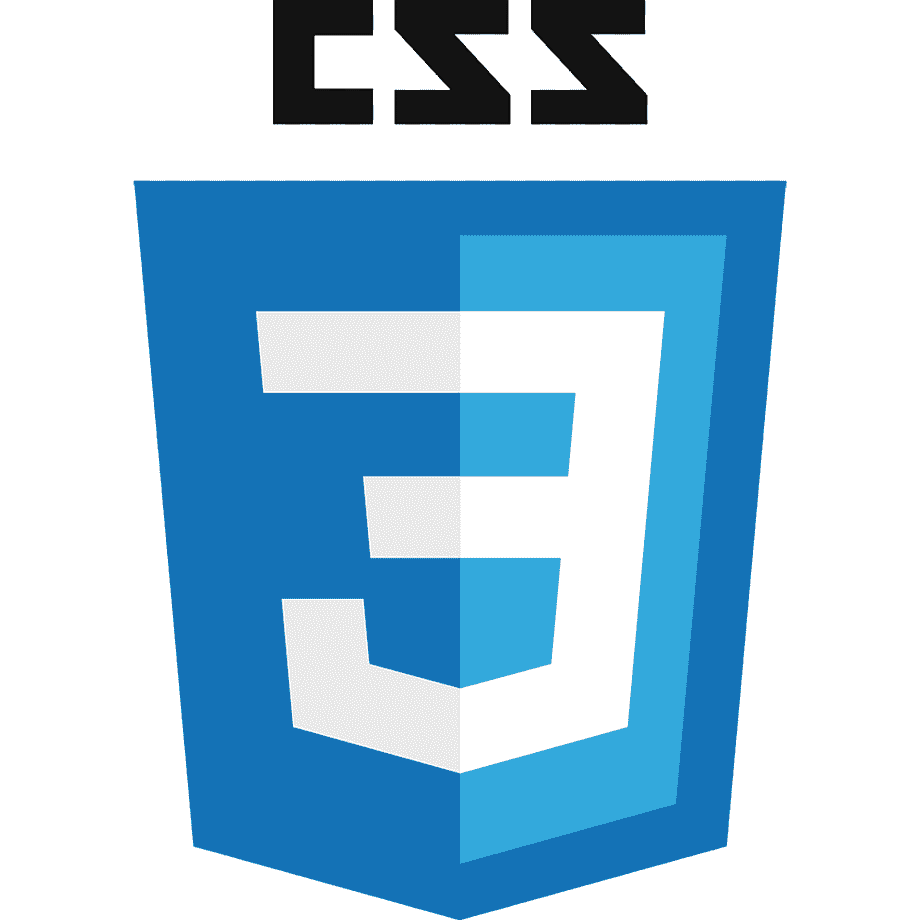

¿Ques es HTML?
Es un lenguaje que utiliza para la creacion de paginas en la web
¿Que es CSS?
es un lenguaje de diseño grafico para definir y crear la presentacion de un documento estructurado escrito en un lenguaje de marcado.
¿Que es JAVASCRIPT

Es un lenguaje de programacion que se puede utilizar para contruir sitios Web y para hacerlos mas interactivos.
Licenciatura en Sistemas Computacionales
© Copyright 2020, luis armando garcia perez